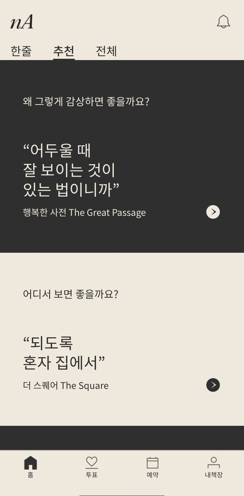
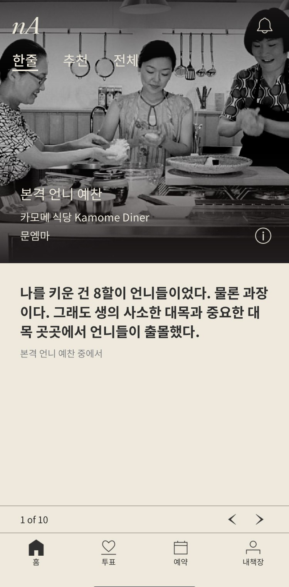
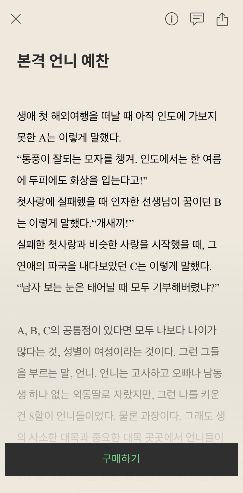
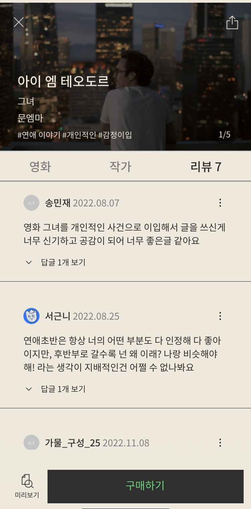

// OVERVIEW
영화 에세이를 다루는 디지털 텍스트 콘텐츠 앱 '노애드'를 운영하며, 리브랜딩을 바탕으로 SNS·홈페이지·앱 온드 채널을 관리했습니다. 베타·구독자 차등 포인트와 다이나믹 링크로 획득에서 구매까지의 퍼널을 설계했고, 시장·경쟁 분석을 통한 MVP·BM 개발로 포인트 충전·구매 플로우를 만들어 유료 재구매로 이어지게 했습니다.
// 목표 & 핵심 지표
1단계 · MVP
디지털 에세이 콘텐츠에 대한 제품 니즈 검증
2단계 · 런칭 후
운영비를 커버하는 매출 확보와, 유료 구매가 반복되는 구조 만들기
핵심 지표유료 재구매율 70.3% · 앱 전환율 69.3% · 구독자 +2,643 · 콘텐츠 만족도 4.1~4.2/5
// 수행 업무
- 앱 서비스 오픈 프로모션 — 3개월 베타 운영, 등급별 혜택 시스템화, 유저 피드백 수집 (앱 이용 만족도 4.2/5)
- 리브랜딩 PM — VOC 수집, 인터널 브랜딩, 브랜딩 스튜디오 커뮤니케이션
- 서비스 MVP 기획·BM 개발 — 시장·경쟁 분석, 핵심 타겟 설정, 포인트 충전·구매 플로우 기획 (재구매율 70.3%)
- 콘텐츠 전략 — 규격 개발, 운영 정책·판매 채널 수립, 유료 판매 전개 (유료 구독 만족도 4.1/5)
// 협업 방식
- 개발외주 개발사와 앱 개발 진행 및 일정·산출물 관리
- 디자인디자이너와 앱 UI·콘텐츠 규격 제작
- 콘텐츠편집장과 필진 운영 및 콘텐츠 품질 관리
- 브랜딩브랜딩 스튜디오와 리브랜딩 협업 (VOC 기반 방향 설정)
담당 범위대표로서 사업 전략·BM 설계·마케팅 총괄기여도 100%
// 성과
70.3%
유료 콘텐츠 재구매율
69.3%
앱 다운로드 전환율
+2,643
이메일 구독자 증가
+1,295
인스타그램 팔로워
// 회고 · 개선
콘텐츠 서비스에서 초기 인지도는 결국 필진의 파급력에서 나온다는 것을 운영하며 확인했습니다. 다시 한다면 마케팅 관점에서 영향력 있는 작가 섭외에 초기 자원을 더 집중했을 것입니다. 또한 외주 개발사의 개발 미이행으로 법적 분쟁과 일정 지연이 발생했고, 이로 인한 자금 소진으로 사업을 정리했습니다. 이 경험 이후 외부 파트너와 일할 때 산출물 기준과 검수 시점을 계약 단계에서 명확히 규정하는 것을 원칙으로 삼고 있습니다.
// 앱 화면



